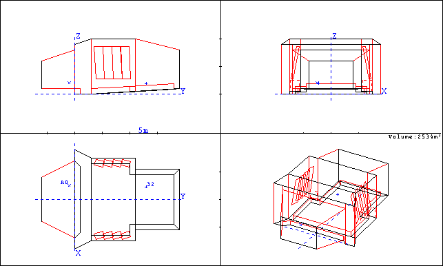
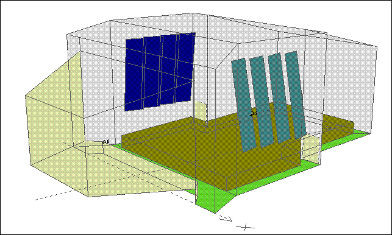
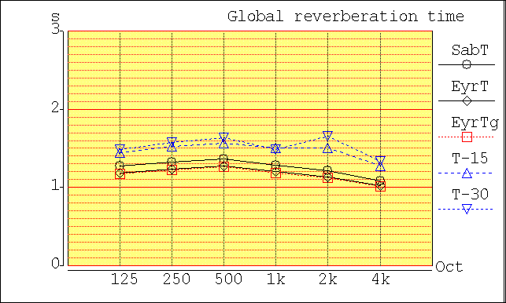
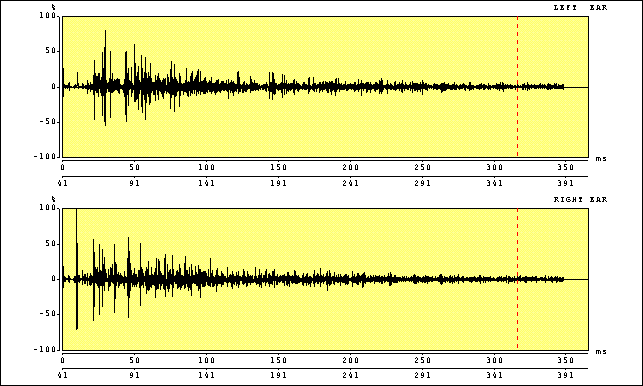

Concert Hall Description
A concert hall is a room designed for the enhancement of solo and orchestral music. Well designed concert halls provide moderate amounts of reverberation at all frequencies to provide sustain and fullness to music. In most concert halls, the walls, floors and ceilings have little absorption. The audience is the largest source of sond absorption and at higher frequencies the air itself provides a large amount of absorption. The shape of a concert hall should be such as to provide good lateral reflections and a smooth diffuse reverberant decay. The higher reverberation times make concert halls poor for speech communication.For these simulations the concert hall that is part of the CATT acoustics tutorial was slightly modified to provide more realistic heights, lengths and stage sizes as shown in the figures below.


Reverberation Time
The reverberation time (RT) in each of the six octave bands from 125 Hz to 4 kHz is shown below. The estimated RT computed using the Sabine equation (circles) and Eyring equation (diamonds) equations is plotted along with the estimated reverberation time computed using ray tracing from 4*T-15 and 2*T-30 (up and down triangles). T-15 is the computed time for the sound energy level to drop by 15 dB from th einitial energy level and T-30 is the time for the sound energy level to drop from -5 dB to -35 dB from the initial energy level.
As one can see, the T-30 computed reverberation time is just over 1.5 seconds in most of the second most of the six octave bands making the reverberation time appropriate for a small concert hall. The reverberation time in the lower frequencies is a bit lower than at mid frequencies so this room may lack the warmth that a strong bass response provides.

Absorption
The absorption coefficients for the ceiling, wall, floor, panel, and chalkboards are shown in the table below. Data were taken from several well known texts including Beranek's "Concert and Opera Halls"
| Absorption Coefficient | ||||||
| Material | 125 Hz | 250 Hz | 500 Hz | 1 kHz | 2 kHz | 4 kHz |
| Plaster on Lath (ceiling/walls) | 0.14 | 0.10 | 0.06 | 0.05 | 0.04 | 0.03 |
| Carpet Glued to Concrete (floor) | 0.02 | 0.04 | 0.08 | 0.20 | 0.35 | 0.40 |
| Wood (stage/walls) | 0.12 | 0.10 | 0.08 | 0.07 | 0.05 | 0.04 |
| Audience (occupied, med uphols.) | 0.68 | 0.75 | 0.82 | 0.85 | 0.86 | 0.86 |
Impulse Response
The impulse response for the room as computed by CATT is shown in the figure below. Notice the clear differences between the left and right ear impulse responses which indicates a low inter-aural cross correlation which is usually good.


|
These animations, auralizations, and visualizations are © 2006 by
Ralph T. Muehleisen and are licenced under a
Creative Commons Attribution-NonCommercial 2.5 License.
|